US chart #1
US chart #1Heart of the Beast
2026 · Movie
Action & AdventureAfter a harrowing plane crash, Special Forces veteran James Belmont (Brad Pitt) and his loyal combat dog, Odin
After a harrowing plane crash, Special Forces veteran James Belmont (Brad Pitt) and his loyal combat dog, Odin, are stranded deep in the unforgiving Alaskan wilderness. With hope running thin, the two must rely on their training, instincts and each other in a brutal fight for survival. From acclaimed filmmaker David Ayer, HEART OF THE BEAST is an intense adventure thriller about courage, sacrifice and the unbreakable bond between two combat partners facing their greatest battle yet.
This week's most-watched films on the official US Apple TV movie chart.
US chart #1 US chart #2
US chart #2 US chart #3
US chart #3 US chart #4
US chart #4 US chart #5
US chart #5 US chart #6
US chart #6 US chart #7
US chart #7 US chart #8
US chart #8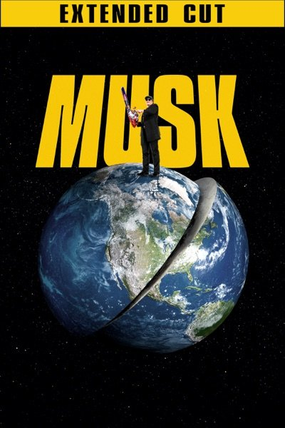
US chart #9 US chart #10
US chart #10 US chart #11
US chart #11 US chart #12
US chart #12 US chart #13
US chart #13 US chart #14
US chart #14What European audiences are watching: the official UK Apple TV movie chart.
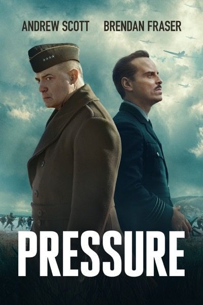
UK chart #3 UK chart #8
UK chart #8 UK chart #11
UK chart #11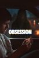
UK chart #12 UK chart #15
UK chart #15 UK chart #18
UK chart #18 UK chart #20
UK chart #20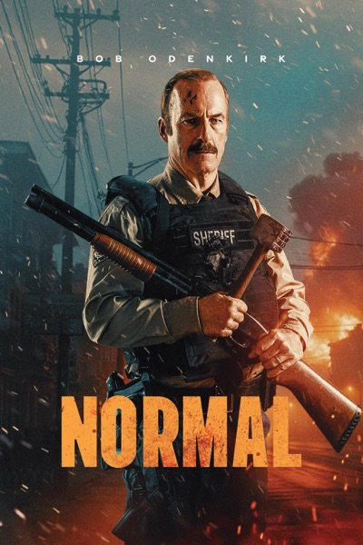
UK chart #21 UK chart #24
UK chart #24 UK chart #25
UK chart #25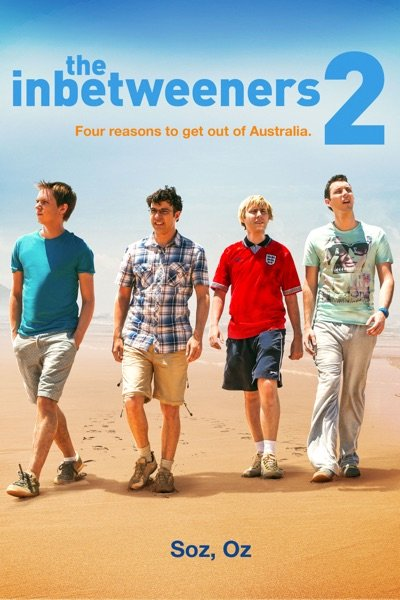
UK chart #26 UK chart #27
UK chart #27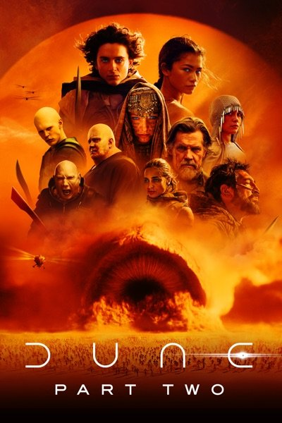
UK chart #29The most popular series on Netflix, ranked by TVMaze popularity data with audience ratings as a cross-check. Week of 16–22 Nov 2026, snapshot: Nov 16, 2026 — a popularity ranking of Netflix series, not Netflix's official daily viewing chart. House of Cards and Orange Is the New Black join the ranking this week.
 Netflix #1
Netflix #1 Netflix #2
Netflix #2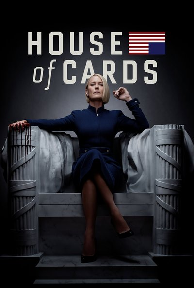
Netflix #3 Netflix #4
Netflix #4 Netflix #5
Netflix #5 Netflix #6
Netflix #6 Netflix #7
Netflix #7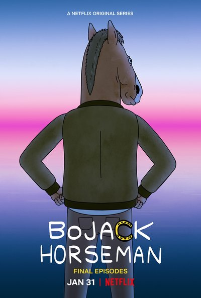
Netflix #8 Netflix #9
Netflix #9The highest audience-rated series of all time, with cast, ratings and official watch links.
 ★ 9.2
★ 9.2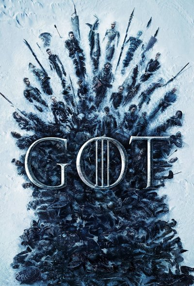
★ 8.9 ★ 8.8
★ 8.8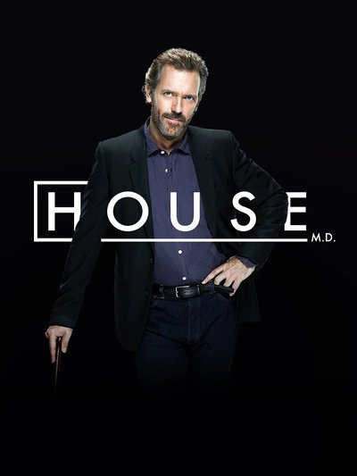
★ 8.7 ★ 8.7
★ 8.7 ★ 8.6
★ 8.6 ★ 8.6
★ 8.6 ★ 8.4
★ 8.4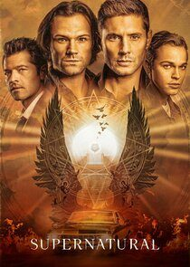
★ 8.4 ★ 8.4
★ 8.4 ★ 8.3
★ 8.3 ★ 8.3
★ 8.3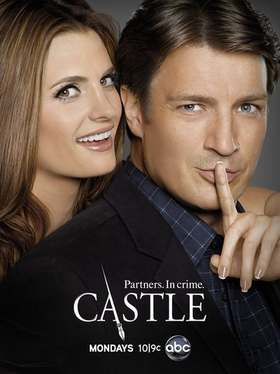
★ 8.2Real series from the TVMaze API catalog — 50 titles baked into this page, frozen as the 16 Nov 2026 snapshot. Drag sideways, use the arrows, or scroll.
★ 9.2★ 8.8★ 8.7★ 8.6★ 8.6★ 8.4★ 8.4Netflix #1★ 8.3Pick a mood and ReelOpal pulls a matching title from the catalog — ratings and official watch links included.
Every guide answers one question completely, from the same real catalog data: what is trending, what is new, what is best in each genre, and where to watch it legally in the USA, UK and Europe.
Updated 16 Nov 2026 — new lists and guides built from the real 176-title catalog.
📺 Netflix Top 10 this week — Black Mirror still #1; House of Cards and Orange Is the New Black join the ranking.
🏆 Best movies of 2026 — 59 real chart titles, US & UK.
🌙 What to watch on Netflix tonight — three picks for Monday 16 Nov, plus a 30-second chooser.
😱 Best thriller series on Netflix 2026 — ranked by TVMaze popularity + ratings.
🇺🇸 Where to watch the Netflix Top 10 legally in the USA — all 10 titles, official links.
🌍 US viewers · UK viewers — the right chart for your country.
ReelOpal brings the signals that shape a movie night together in one place — the Netflix Trending Top 10 popularity ranking, the official US and UK movie charts, and an all-time top-rated series index with verified audience ratings. This catalog is a dated snapshot (series rebuilt November 16, 2026; movie charts November 14, 2026) from those sources, refreshed whenever the site is rebuilt.
Each title page gives you the facts that decide a movie night: storyline, genres, cast and ratings for series, and a direct link to the title's official provider page so you can watch it legally on the service that carries it. Build a watchlist, filter by genre or rating, and export your list to take it anywhere.
ReelOpal hosts no streams and no downloads. All metadata and posters come from legal sources — the TVMaze API for series and Apple's official iTunes charts for movies — and all artwork belongs to its respective owners.
One link, matched to your country — the trending movie, series & streaming offer for US & Europe viewers right now.
Checking…
Get the weekly Top 10 — Netflix trending, US & Europe movie charts and the highest-rated premieres — in one short email every Friday.
✅ You're in. Your first Top 10 digest is queued for Friday.
See this week's Netflix Top 10